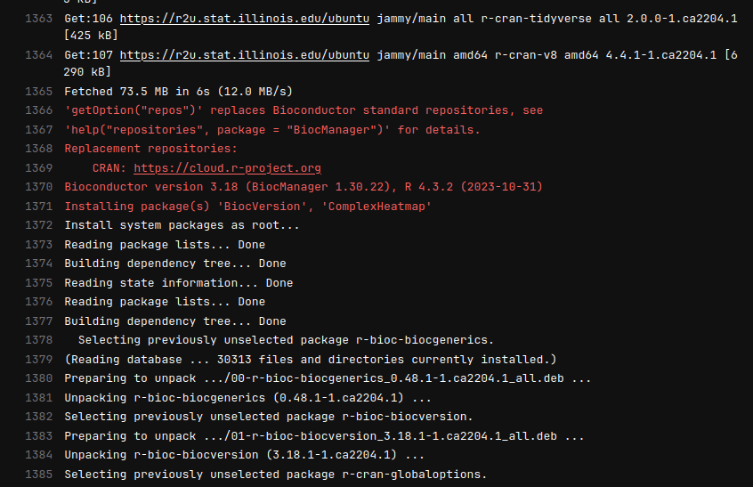
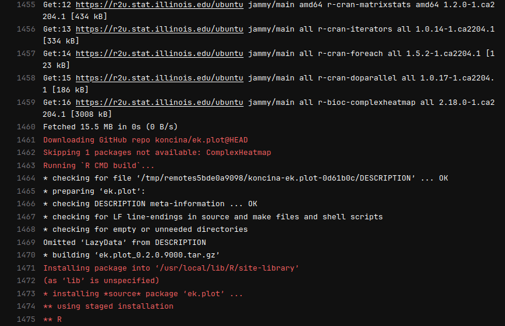
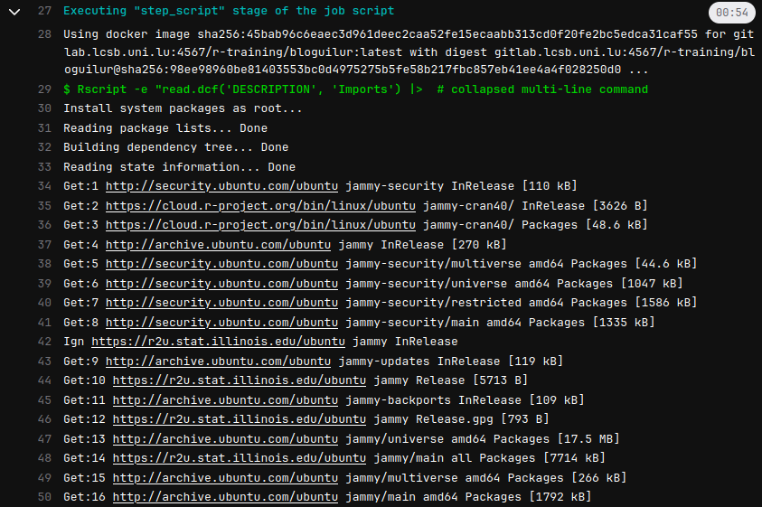
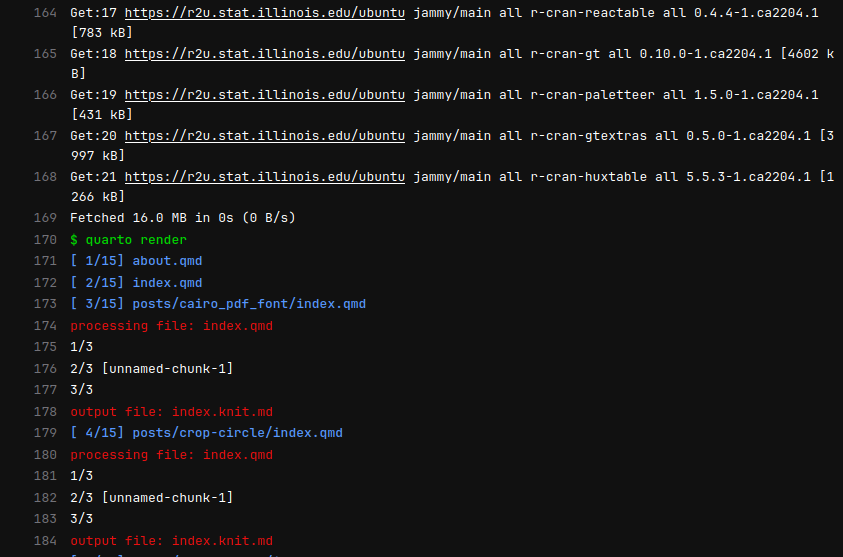

Rationale
{renv} is a great tool to manage dependencies. Especially it records versions of packages used in a project. This is a great feature for reproducibility, of course only if the renv.lock is git tracked.
However, there are situations where we don’t really care about reproducibility, but we want to speed up the CI process. For example, when we built a teaching website or a Quarto blog.
In CI, starting from raw Ubuntu images, a renv::restore() with tidyverse and bioconductor packages can take more than 30 minutes. This is a lot of time wasted for a simple blog post or a teaching website.
A failing solution
One solution is to use pre-built packages. The Public Posit Package Manager should offer this feature (see previous post), but the different flavor of makes it over-complicated and some past versions of packages are not available. Even more problematic is missing system libraries are not solved. Only when you do library(xml2) you realize that libxml2-dev is missing.
A working solution
This is what the {r2u} project is about: CRAN as Ubuntu Binaries.
This project was initiated and is maintained by Dirk Eddelbuettel and hosted on Github.
Recently, it even got a Docker image on the Rocker project.
How to use it
I saw this toot from Dirk on Mastodon:
And decided to go for a fake DESCRIPTION file.
I will write down the setup for a blog on Gitlab as an example.
All packages could be in the DESCRIPTION file but we could also cache directly in the image some packages.
Dockerfile
Here I have all kind of sources:
CRANpackagesBioconductorpackages (needsBiocManagerfirst)Githubpackages
And Quarto, fetch the pre-release from .
FROM rocker/r2u:22.04
RUN apt-get update && \
apt-get install -y \
curl netbase zip git \
libxml2-dev libcurl4-openssl-dev libmagick++-dev
RUN install.r tidyverse rmarkdown BiocManager Rcpp V8 htmlwidgets magick \
&& installBioc.r ComplexHeatmap && installGithub.r koncina/ek.plot
ARG QUARTO_VERSION="1.4.537"
RUN curl -LO https://github.com/quarto-dev/quarto-cli/releases/download/v${QUARTO_VERSION}/quarto-${QUARTO_VERSION}-linux-amd64.deb && \
apt-get update -qq && apt-get -y install \
./quarto-${QUARTO_VERSION}-linux-amd64.deb && rm quarto-${QUARTO_VERSION}-linux-amd64.deb \
&& apt autoremove -y && apt clean -y && rm -rf /var/lib/apt/lists/*DESCRIPTION file
I guess it could also be shortened to the Imports field only.
Package: bloguilur
Title: bloguilur Companion
Version: 1.0.0
Authors@R:
person("Aurélien", "Ginolhac", , "aurelien.ginolhac@uni.lu", role = c("aut", "cre"))
Description: Companion website University of Luxembourg
License: MIT + file LICENSE
URL: https://r-training.pages.uni.lu/bloguilur/
Depends:
R (>= 4.1.0)
Imports:
countdown,
cropcircles,
fontawesome,
ggimage,
ggplot2,
glue,
gt,
gtExtras,
huxtable,
knitr,
ragg
Encoding: UTF-8
Language: en-US
RoxygenNote: 7.2.3Gitlab CI configuration
.gitlab-ci.yml file, showing only the build_site stage:
build_site:
stage: build_site
image: $CI_REGISTRY_IMAGE:latest
cache:
key: ${CI_JOB_NAME}
paths:
- _site/
- _freeze/
artifacts:
name: "$CI_JOB_NAME"
expire_in: 2 days
paths:
- _site/
before_script:
- |
Rscript -e "read.dcf('DESCRIPTION', 'Imports') |>
tools:::.split_dependencies() |>
names() |>
setdiff(tools:::.get_standard_package_names()$base) |>
install.packages()"
script:
- quarto render
tags:
- shared-cache
when: alwaysResults
Building the Docker image took 5 minutes 30 seconds.
 […] 
Building the website took 1 minutes 7 seconds.
 […] 
Once the image is there, the site building + publishing on the pages took 1 minutes 47 seconds.
GitHub Actions
For this blog, the config file is:
on:
push:
branches:
- main
name: Build and Publish blog
jobs:
build-deploy:
runs-on: ubuntu-latest
container:
image: rocker/r2u:latest
env:
GITHUB_PAT: ${{ secrets.GITHUB_TOKEN }}
steps:
- name: Check out repository
uses: actions/checkout@v3
- name: System Dependencies
run: |
apt update -qq && apt install --yes --no-install-recommends cmake git \
curl jq netbase \
libxml2-dev libcurl4-openssl-dev libmagick++-dev
- name: Mixed packages
run: |
install.r tidyverse rmarkdown BiocManager Rcpp V8 htmlwidgets magick \
&& installBioc.r ComplexHeatmap && installGithub.r koncina/ek.plot
- name: Package Dependencies
run: |
Rscript -e "read.dcf('DESCRIPTION', 'Imports') |>
tools:::.split_dependencies() |>
names() |>
setdiff(tools:::.get_standard_package_names()$base) |>
install.packages()"
- name: Set up Quarto
env:
QUARTO_VERSION: "1.4.538"
run: |
curl -s -LO https://github.com/quarto-dev/quarto-cli/releases/download/v${QUARTO_VERSION}/quarto-${QUARTO_VERSION}-linux-amd64.deb && \
apt-get update -qq && apt-get -y install \
./quarto-${QUARTO_VERSION}-linux-amd64.deb && rm quarto-${QUARTO_VERSION}-linux-amd64.deb
- name: Publish Quarto blog
uses: quarto-dev/quarto-actions/render@v2